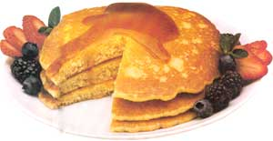
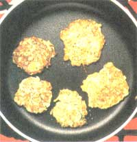
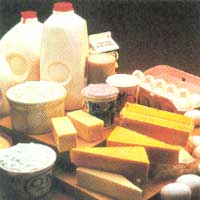
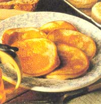

NATURAL HEALTH
Stop making excuses for skipping breakfast; learn to make easy recipes the whole family will love.
“I just don't have any time." "I'm never hungry in the morning." "I'll grab something on the road." We've all heard, if not employed, these boycotting techniques to avoid breakfast. In fact, in one-half of all U.S. families, one or more members (including children) regularly skip breakfast. Perhaps we can blame it on childhood memories of runny eggs, lumpy oatmeal, and sticking bread crusts under our plate rims. So when we finally hit grown-up status, it was "Down with oatmeal!" and onto mid-morning coffee/donut breaks.
Still, Mom's "Breakfast is vital!" speech lives deep within all of us. And, of course, she is right. Without breakfast, our blood-sugar level drops by mid-morning, causing us to crave sugar and caffeine. We grab a quick fix, only to crash into irritable weariness a few hours later. Studies from the University of California show that breakfast can be a life-changing event. Researchers found that those who ate breakfast every day (or almost every day) lived longer. In the control group, death rates were 40 percent higher among male breakfast skippers and 28 percent higher among female skippers. Another study showed a connection between eating a nutritious breakfast and improved physical and mental performance. The benefits include: faster reaction time, higher productivity during later morning hours, and less muscle fatigue.
The best foods to "break fast" contain small amounts of protein, high fiber, and complex carbohydrates. If you're starting to get a little tired of cereal and toast, the breakfast recipes below will spruce up your morning.
Pancakes can be ready in five minutes if you measure the dry ingredients the night before. All you have to do is throw ingredients in the blender the next morning or prepare the batter ahead of time, waiting to add the baking powder just before frying. Unfortunately, pancakes have the reputation for being too heavy for many folks in the morning. They don't have to be high-fat if you barely coat a non-stick skillet with oil or vegetable cooking spray. Top them with fresh-fruit yogurt, fruit or fruit syrup, so they won't be swimming in maple syrup. Use whole-wheat pastry flour instead of whole-wheat flour to produce a lighter mixture, and you can also add some oat bran for fiber. Leftover pancakes can be frozen in baggies and reheated in a skillet another day.
1 cup whole-wheat pastry flour
2 tablespoons oat bran (or wheat germ, buckwheat, or cornmeal)
1 tablespoon sugar
1 cup low-fat buttermilk
1 tablespoon oil
1 egg
1 teaspoon baking powder
½ teaspoon baking soda
In a blender, combine all the ingredients except the baking powder and baking soda. Let mixture sit for a few minutes. Using medium-high heat, heat the skillet, and blend in the baking powder and baking soda. Pour out three-inch pancakes, flipping after about 30 seconds, when they're brown on the bottom and bubbly on top.
1 cup fresh or frozen blueberries
1 tablespoon water
1 to 2 tablespoons maple syrup
Combine all ingredients. Then heat them in any size saucepan until the syrup starts to bubble. Stir it up and mash some of the blueberries. Serve immediately.
1 cup fresh strawberries
1 tablespoon brown sugar or fructose
Mash ingredients together and chill until serving.
1 pint (or more) non- or low-fat plain yogurt
Line a colander with a dish towel and set in the sink or over a bowl. Pour the yogurt into the towel and cover it slightly with the ends of the towel. Let sit overnight or for at least 12 hours. Store in a plastic container and refrigerate.
Corn Cakes
These vegetable pancakes are perfect for brunch. Using a food processor to grate vegetables decreases preparation time.
¼ teaspoon cayenne pepper
¼ teaspoon salt
1 tablespoon sugar
½ teaspoon baking soda
2 teaspoons baking powder
¾ cup whole-wheat pastry flour
1 cup cornmeal
1 tablespoon oil
½ cup non-fat yogurt
¾ cup skim milk
1 egg
½ cup grated carrot
½ cup grated zucchini
1 cup corn (fresh or frozen)
¼ cup thinly sliced green onions mixture of non-fat yogurt and "lite" sour cream
Stir together the pepper, salt, sugar, soda, baking powder, flour, and cornmeal. In a food processor, mix the oil, yogurt, milk, and egg. Stir the liquid into the flour mixture, then stir in the vegetables. Heat an oiled skillet on medium-high heat and make three-inch pancakes, turning them over when they're bubbly on top and golden brown. Don't under cook or they won't be done on the inside. Top with a mixture of yogurt and sour cream.
Eggs (as many as you need)
10 to 15 small, fresh spinach-leaves per egg
butter or oil
freshly grated Parmesan or Romano
cheese (we like Pecorino Romano)
freshly ground pepper
Butter as many custard cups as are needed for each egg. Cook the spinach in a frying pan with a few drops of water just until it wilts or microwave on a plate for 10 to 15 seconds. Put about about ½ cup of spinach in each custard cup, making a well for the egg. Break an egg into each well and sprinkle with cheese and pepper. Put the cups on a cookies sheet and bake at 350° for 10 to 12 minutes, depending on how well done you like your eggs. After 10 minutes, the whites will be firm and the yolks will start to harden.
This is a hearty man-type breakfast. Make it for brunch and no one will be hungry until dinner.
2 Mexican chorizo sausages, approximately ¾ lb., removed from casings (can be purchased at a Mexican grocery or butcher)
2 garlic cloves, minced
1 medium onion, minced
1 small cayenne or jalapeno pepper, minced
2 medium red or white-skinned potatoes, cut into ½ cubes ½ teaspoon ground cumin
1 large green pepper or poblano pepper, chopped
1 medium tomato, skinned and diced into ½" pieces
2 eggs
1½ cup low-fat Muenster or Monterey Jack cheese, grated whole-wheat tortillas "lite" sour cream or yogurt chopped green onion
Using a non-stick skillet, fry the sausage, garlic, onion, and hot pepper until the meat is cooked. Steam the potatoes in a tablespoon of water in a covered pan or microwave until done. Add the cumin, potatoes, green pepper, and tomato to the skillet and cook for three to four minutes, stirring occasionally. Drizzle the eggs over the mixture and let set over heat for a minute or so before stirring. Serve with cheese on top along with some tortillas, sour cream, and green onions.
Store-bought granola is not all that great for you. Try making a big batch yourself and save on the fat, sugar, and cost.
1 cup wheat germ
2 cups oat bran
3 cups oats
1 cup wheat or rye flakes
1½ cup sliced, almonds
¾ cup chopped walnuts (optional)
½ cup sesame seeds
¼ cup maple syrup
¼ cup honey
½ cup oil (1/3 cup if you desire less fat)
Mix dry ingredients. Heat the maple syrup, honey, and oil in a saucepan or microwave until bubbly. Stir into the dry ingredients, mixing well. Pour into a shallow pan (9" x 12" cake pan) and bake for 15 minutes in a 350° oven. Remove and stir. Bake for 10 minutes, then remove and stir. Bake for 10 more minutes until light brown. Let cool. Granola will become crunchy as it cools.
|
 STAAN SHOLICK |
 AMY REICHMAN/ENVISION |
 PHOTOBANK |
|
 STEVEN MARK NEEDHAM/ENVISION |
|
|